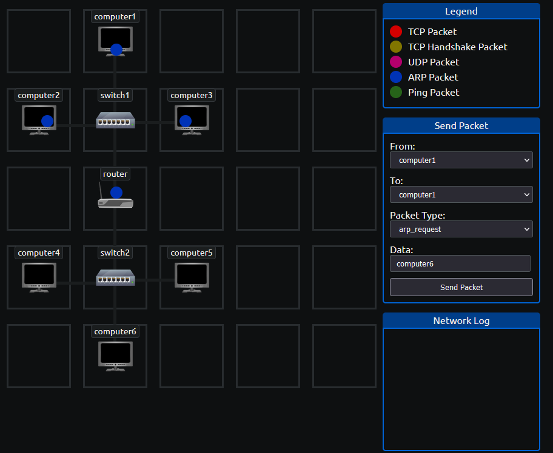

nmap
nmap Ağ içi veya dışında verilen bir IP adresinde bulunan diğer IP ve MAC adreslerini eşleştirip göstermekle kalmayıp, bağlı olduğu servisler ve portlar gibi önemli bilgileri de verebilen çok güçlü bir araçtır.
Diğer tanımlar;
Nmap, ağ tarama ve zafiyet tespiti için kullanılan açık kaynaklı bir araçtır. İsmini Network Mapper'in kısaltmasından almaktadır.
Taranan ağın haritasını çıkarabilir ve ağ makinalarında çalışan servislerin durumlarını, işletim sistemlerini, portların durumlarını gözlemleyebilir.
En temel haliyle şu şekilde kullanılabilir
Bu komut sonrası örnek olarak şu şekilde bir sonuç çıkacaktır
#tekrar et -2kaynak:
https://tryhackme.com/room/nmap01
#tekrar et -3Contrary=Aksine
reveal=ortaya çıkartmak
omitting=atlamak